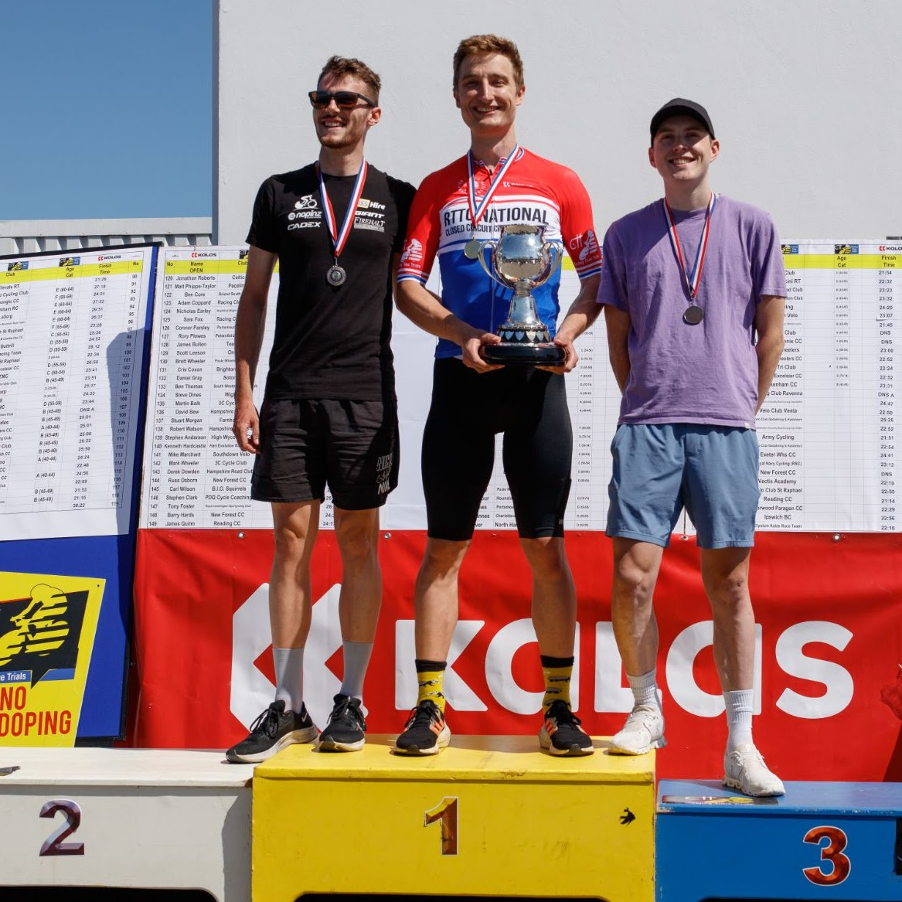
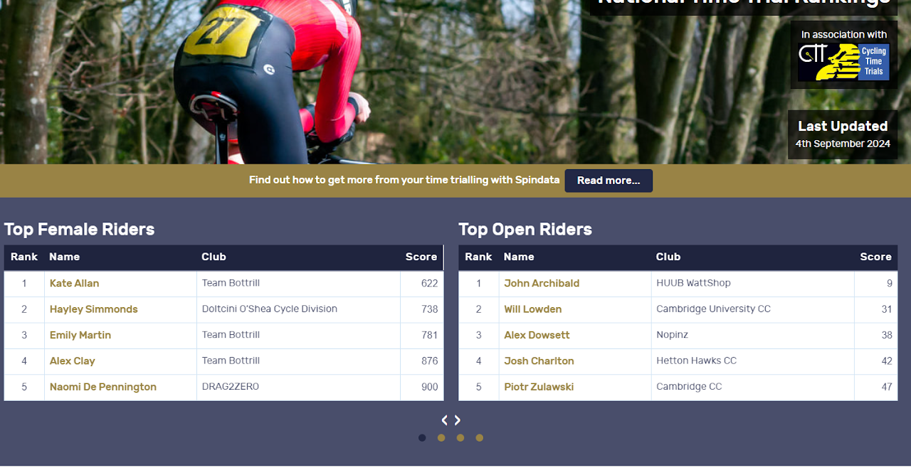

Season Summary 2024
It’s already November as I’m getting started on this summary, and it has been more than two months since my final race of the season. As the weather turns, I thought that penning down a few thoughts on this year’s events would be a nice thing to do, given how eventful and — dare I say — unexpectedly successful it has been.
The story of my struggles to contort my inconveniently non-cyclist frame into a vaguely aerodynamic shape has already been well documented in my other entries, and so I won’t focus on that here. Instead, I want to talk more about other things: the training, the racing, the planning that goes into both. But I also want to talk about what cycling has been to me; about not taking things too seriously; about deliberate effort and lucky breaks; about getting to the 99th percentile of your ability, and about letting the one percent go.
Training
In previous seasons, I didn’t get training right.
I have always set my own training. The problem with doing so is that, even if you have trained for several years and experimented with various training regimes, that’s still a very small sample of attempts to draw useful conclusions from. Especially since no athlete wants to cock up their season by getting it horribly wrong, meaning that any experimentation will be evolutionary rather than revolutionary, with healthy safety margins built in. Playing this type of small-numbers-statistics game, in an environment where the feedback (the evaluation of whether a particular attempt or tweak has been successful) does not result in true learning; the process is too complicated, with too many variables and not enough validation. The signal is less than the noise, and the context in which you experiment keeps changing.
In past seasons, I have been guilty of extreme conservatism: the thought that I could not peak in time would drive me towards scheduling too much hard work early on, in pursuit of big numbers, just to gain reassurance that I’d ‘still got it’. This year I managed my workload much more productively, largely because I gained access to a much more comprehensive source of knowledge and experience than my own sample of one. That source is called Mike Hutchinson. Mike helped me with specific training advice throughout the year, providing an unbiased (or at least differently biased) view of what kind of training seemed to generate the responses we were after, and switching things around once it became evident that a particular approach no longer served its purpose, or once the priorities changed as the racing season approached.
I also started appreciating that scheduling training I enjoy — as long as it more or less fits the bill — makes the mental strain of training a lot more tolerable. For example, twenty minutes broken into minute-long over-unders feels a lot less mentally taxing to me than a single twenty-minute slog at the same average power. I can somehow talk myself into ‘just another minute’, which then becomes ‘but it’s only three sets to go’, which then becomes ‘you aren’t stopping with two minutes to go, are you?’. Somehow, this mental bargaining isn’t nearly as effective during a flat effort. But the kind of stimulus you get from either session is very similar — so, in a sport that is already more than sufficiently character-building, taking the easy way out is simply the right thing to do.
Another type of session that proved rather effective in transitioning from winter training into more race-specific work was spending lots of time just under LT2 (sweet-spot). Apparently, most people find sitting at around 85% FTP for an hour gruelling; as for me, as long as I don’t poke my head above the FTP parapet, I am quite happy to sit there all day long.
Perhaps even more importantly, Mike helped me trust the process and eased the anxiety driving me to turn the work dial to eleven. By getting out of the ‘more is always more’ mindset, I was able to complete less training overall, the training I did complete was significantly less physiologically and mentally taxing, and it all eventually led to better results. The hard sessions started much later in the season than I would instinctively have planned, meaning that I improved in almost every session, never hit a plateau, and produced my best power outputs in the most important races.
Racing
My racing also improved, both in terms of execution at individual events and in terms of planning races and picking my battles.
I had a major gap in training from mid-February to mid-March, which I treated as a restart of sorts after emerging from winter training. This still gave me several months until my A-grade events — the Closed Circuit National 10 and the Road National 10. With my renewed training approach, I understood that period would have been far too long to treat as a singular training cycle, so I broke it down into two equally sized parts: a trial build, followed by the real thing, enhanced by all the learning from the trial.
At approximately the halfway point of the season, there were a couple of races that closely resembled my target events: a 10-mile on the F2A/10 on 5th June, and a closed circuit race at Goodwood on 12th June — the exact venues where the respective Nationals would be held. I had set my sights on those early as opportunities to rehearse training, tapering, and racing. A bout of Covid in mid-May forced a slight reschedule (I kept Goodwood but swapped the F2 race for an E2/10 on 19th June), but those trial runs proved invaluable. I learnt that a proper multi-day taper gives me an appreciable bounce on race day, and that managing overheating with ice vests and ice slush buys a few minutes of grace in hot conditions. Given the margins at the pointy end of the field — there were four separate dead heats in the National 10’s top-20, including the podium — those and many other insights were critical.
Planning the race calendar early in the season also gives more clarity and control over incorporating races into training. I ended up doing fewer races than pencilled in, but having a calendar of candidate events — rather than searching through the CTT website each time — made it easy to keep training and racing aligned.
Results: I entered 14 races, raced 10, won eight — including course records on B10/1R and E33/10, a victory in the coveted Chronos RT, the ECCA 10-mile Championship, and a National title at Goodwood Circuit. I was only bettered by other National Champions, current and past: Will Lowden, Adam Duggleby, and Jon Archibald. I also scored a dead heat with Tom Lee, a talent surely separated from a National title of his own by time alone. Frankly, I don’t mind that kind of record.

Oh, and I made the front page of Spindata, briefly making me (I believe) the highest-ranked fully amateur rider in the country.

I also clocked several 17-minute rides, with a PB of 17:43 — just outside the top-10 all-time fastest rides on record, and two seconds faster than Hutch’s competition record, which he was only slightly disgruntled about.
What has cycling been to me
Moving on from factual reporting, I also wanted to explore the bigger picture.
This season, I think, I have had more fun riding and racing my bike than ever before. Some of it came from winning races, to be sure. But, in retrospect, the excitement of winning — while great in the moment — was nowhere near as sustained as the excitement of getting the process right. Oddly enough, what has stayed in my memory just as vividly, or perhaps more so, than the wins, were the times when things clicked. It was that time when the painstakingly designed and machined front end bracket arrived in the post; or when it fitted onto the base bar, perfectly, at first try; or when we tested it in the tunnel and it chopped 6% of the CdA; or when we validated that wearing overshoes inside lace-up shoes is unreasonably faster; or when we found that the tunnel gains not only translated onto the road, but that road speed actually exceeded what the tunnel indicated; or when I discovered that I can bag ten watts from a proper taper procedure. The list goes on, but you get the point.
This whole year has been a real adventure, consisting in equal measures of deliberate, carefully planned effort, and of lucky breaks. I have described at length some of the first-principles approaches I employed to find speed, but in many cases those efforts were either inspired or enabled by a kind of serendipity I can take very little credit for.
This serendipity has taken many forms, but primarily it has been through the various incredible people I was lucky enough to come across. Back in 2022, at the usual post-race mingle after an event I’d signed up for on a bit of a whim, I got talking to Will Taylor, who was planning some field testing on an outdoor velodrome; fast-forward to 2023, and we were doing laps of Herne Hill, collecting data and figuring out, in big handfuls, what worked and what didn’t. In the summer of that year, after another race, I bumped into Richard Oakes, a true legend of our sport, famous for his incredibly optimised aero setup. Richard put me in touch with Mike Twelves, who was incredibly helpful in validating the early velodrome findings in the more controlled environment of a wind tunnel. Through a network of other connections, I then modified the bike to follow through on those findings. In the meantime, my local weeknight club TT scene — with a typical attendance of about ten riders — happens to be the home turf of Mike Hutchinson, the men’s time trialling scene’s undisputed GOAT, whom I somehow managed to convince to aide my cause.
None of this was planned. While you have to put yourself in a position to be lucky, lucky you must still be. The lesson extends beyond cycling: sometimes, when tackling a problem, it’s impossible to work out the precise details of a solution and how it may come about. So the best you can do is put yourself in an environment that is likely to contain the ingredients of a solution.
What’s next
As I finish the season, it’s not only an opportunity to reflect on how things have gone, but also a time to think about what’s next.
On one hand, I have just finished what, objectively, was an incredible season. There is a sense that I ought to continue — race again, defend my title, win more races. Enjoy the process all over again. On the other hand, I am a very goal-oriented person. Back in 2021, at my very first Open event — the Closed Circuit Champs at Thruxton — I caught the bug of time trialling. I was miles off the pace, but I was hooked; I thought to myself: I really want to win one of those. And, while in the years that followed I enjoyed the process, that process existed to tackle a very specific end state.
In general, I find that in order to keep engaged, both the process and the end goal are needed. The process is needed because, in the sea of hard, identical days, the abstraction of the end goal cannot be relied upon alone — motivation wears quickly, and it’s the clarity and immediacy of the process that gets the work done. But a process cannot exist in a vacuum either. Without an end goal, the process becomes a habit. Strip the purpose from the process, and ‘winning a championship’ becomes a habit of ‘riding my bike’. Habits can be excellent things — they are the building blocks of internalised productivity — but they are harder to get excited about. The end goal legitimises and guides the process; without one, a process cannot be built.
Now that I have ticked this goal off my bucket list, the end goal is, in a way, undermined. It’s not that I have lost my love for the sport — I will certainly keep cycling at some level — or that I wouldn’t like to win a race again. But I do feel like I have reached the 99th percentile of my ability, and I’m simply not sure how much satisfaction I would get out of chasing the last percentage point. There are so many other things I want to try and do, things that are qualitatively — not just quantitatively — different, and there’s only so much time.
As things stand, the plan is to find out whether there’s any outrageous aero magic that would enable a major, qualitative difference to my racing. To quantify: to compete with some of the best riders currently on the market, I calculate I would need a CdA improvement of around 8%; in practice, since my real-world performance has exceeded tunnel gains by around a third, a tunnel gain in the area of 5% would be sufficient. That’s a tall order — given that the position already looks more than reasonable and we’ve already mined significant gains in previous sessions — but I have a few ideas, and I’m hoping to make another winter project out of it.
Otherwise, I think I would rather quit while ahead, having gone further than I ever hoped to go.
If that’s the case, then what’s next? I’m not sure yet. I will have to do a bit of soul-searching. What I do know is that cycling has provided an excellent outlet for all of my faculties: it challenged both mind and body; it let me be creative designing unorthodox bike setups, and analytic planning training, testing, and racing; it offered both the everyday grind of managing time and fatigue, and the unique, in-the-moment, nowhere-to-hide challenge of the race day. It was something to push against on all fronts — uniquely rewarding and easy to buy into. Whatever I do next, I am hoping for it to share many of those characteristics.
Apart from exploring the feasibility of a major aero gain, I have a few other non-cycling-related irons in the fire — but it’s too early to discuss those here.
Anyway, final summary: the world’s had a bit of a weird year overall, but cycling’s gone good, I may or may not do some more next year, or maybe I’ll take up birdwatching. Thanks for reading, bye.